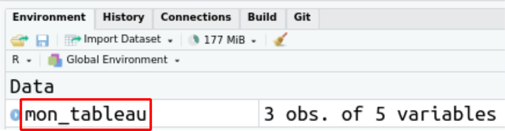

Les fonctions primitives pour manipuler un tableau de données
Auteur·rice
Hugues pecout
Date de publication
20 février 2023
Plusieurs packages comme data.table ou tidyverse (dplyr, tidyr, stringr…) sont d’excellentes extensions qui facilitent la manipulation de données. Cependant, le langage R et ses fonctions primitives permettent déjà de faire beaucoup de choses facilement et sans charger de packages supplémentaires… Une bonne pratique en matière de reproductibilité !
Dans cette leçon, nous nous intéressons principalement à la manipulation de tableau, et plus précisément à la manipulation de l’objet data.frame avec R.
Le data.frame
Le data.frame est un objet primitif de R qui permet de stocker un tableau de données.
Chaque colonne d’un data.frame est en fait un vecteur (liste d’éléments de même type). On peut donc dire qu’un data.frame est en réalité un ensemble de vecteurs de même longueur (même nombre d’éléments). Pour bien comprendre cela, il suffit de construire un data.frame de toute pièce :
# Construction de plusieurs vecteurs de même longueur (3 éléments à chaque fois)nom <-c("Modibo Keïta", "Moussa Traoré", "Alpha Oumar Konaré")naissance <-c("1915-06-04", "1936-09-25", "1946-02-02")arrivee_pouvoir <-c(1960, 1968, 1992)duree_pouvoir <-c(8, 22, 10)parcours_militaire <-c(FALSE, TRUE, FALSE)# Construction du data.frame à partir de ces vecteursmon_tableau <-data.frame(nom, naissance, arrivee_pouvoir, duree_pouvoir, parcours_militaire)# Vérification du type d'objet créerclass(mon_tableau)
[1] "data.frame"
mon_tableau :
nom
naissance
arrivee_pouvoir
duree_pouvoir
parcours_militaire
Modibo Keïta
1915-06-04
1960
8
FALSE
Moussa Traoré
1936-09-25
1968
22
TRUE
Alpha Oumar Konaré
1946-02-02
1992
10
FALSE
Interroger un df
Plusieurs fonctions permettent de visualiser la structure d’un data.frame. Exemples :
# Afficher le tableau de donnéesView(mon_tableau)
Cette fonction est l’équivalent du clic sur l’objet data.frame dans l’onglet environnement de l’EDI Rstudio :

Il est également possible d’afficher, directement dans la console, les premières lignes ou dernières lignes d’un data.frame.
# Afficher les premières lignes (6 par défaut)head(mon_tableau)# Afficher les denrières lignes (6 par défaut)head(mon_tableau, n =10)
La fonction str() permet d’interroger la structure d’un tableau et de ses variables.
# Pour connaitre la structure d'un tableaustr(mon_tableau)
Enfin la fonction summary(), qui peut être utilisée sur n’importe quel type d’objet, renvoie un résumé statistique pour chaque colonne lorsqu’elle est exécutée sur un data.frame.
summary(mon_tableau)
nom naissance arrivee_pouvoir duree_pouvoir
Length:3 Length:3 Min. :1960 Min. : 8.00
Class :character Class :character 1st Qu.:1964 1st Qu.: 9.00
Mode :character Mode :character Median :1968 Median :10.00
Mean :1973 Mean :13.33
3rd Qu.:1980 3rd Qu.:16.00
Max. :1992 Max. :22.00
parcours_militaire
Mode :logical
FALSE:2
TRUE :1
Créer un colonne
La syntaxe suivante mon_tableau$nom utilisant le symbole “$” permet de sélectionner une colonne (ici ‘nom’) d’un data.frame. Cette syntaxe peut également être utilisée pour créer une nouvelle colonne. Exemple :
mon_tableau$new_col <-c("val1", "val2", "val3")
Cette syntaxe permet également créer une nouvelle colonne à partir de colonnes existantes :
Le symbole “$” permet de sélectionner une colonne d’un tableau. Pour sélectionner plusieurs colonnes et également des lignes précises, deux solutions sont possibles.
Les crochets [ , ]
# df[toutes les lignes, 4e colonne]mon_tableau[, 4]# df[lignes 1 à 2, toutes les colonnes]mon_tableau[1:2, ]# df[toutes les lignes, 1er et 3e colonne]mon_tableau[, c(1,3)]# df[toutes les lignes où la durée du pouvoir est égal ou supérieur à 10]mon_tableau[duree_pouvoir <=10, ]
Exemple, sélection des valeurs situées ligne 2, dans les colonnes “nom” et “naissance” :
La fonction primitive subset() permet également de réaliser des sélections dans un data.frame. Avec cette fonction, il n’est pas possible de sélectionner des lignes avec leur index. La sélection de ligne doit forcément répondre à une condition.
La fonction primitive pour regrouper des lignes d’un data.frame en fonction d’une valeur n’est pas très simple d’utilisation. De plus, elle ne permet de calculer qu’une seul nouvelle variable à partir du regroupement opéré. La fonction goup_by() du package dplyr lui est souvent préférée.
# Regroupement les lignes sur variable "parcours_militaire"# et calcul du nombre d'individus regroupésaggregate(mon_tableau$parcours_militaire, by=list(militaire=parcours_militaire),FUN = length)
militaire x
1 FALSE 2
2 TRUE 1
# Regroupement les lignes sur variable "parcours_militaire"# et calcul de la durée moyenne au pouvoir pour chaque groupeaggregate(duree_pouvoir ~ parcours_militaire, data = mon_tableau, FUN = mean)
Un jointure peut s’effectuer à l’aide de la fonction primitive merge().
# Construction d'un second tableau nom <-c("Modibo Keïta", "Moussa Traoré", "Alpha Oumar Konaré")deces <-c(1977, 2020, NA)mon_tableau_bis <-data.frame(nom, deces)# Jointure de deux tableaux par le "nom"merge(mon_tableau, mon_tableau_bis, by="nom")
La fonction primitive sort() peut être utilisée pour trier les éléments d’un vecteur, mais pour trier un tableau en fonction des valeurs d’une ou de plusieurs variables, utilisez la fonction order(). Il est obligatoire d’assigner le résultat dans un objet pour que le tri opéré soit gardé en mémoire.
La manipulation de chaîne de caractère dans un tableau est une opération classique. Si il existe des packages très puissant comme stringr pour traiter les chaînes de caractère, les fonctions primitives du langage R offrent un certain nombre de fonctionnalités.
Concatener
Les fonction paste et paste0 permet de concatener des chaîne de caractère
paste(mon_tableau$nom, "a été président du Mali pendant", mon_tableau$duree_pouvoir, "ans")
[1] "Modibo Keïta a été président du Mali pendant 8 ans"
[2] "Moussa Traoré a été président du Mali pendant 22 ans"
[3] "Alpha Oumar Konaré a été président du Mali pendant 10 ans"
Gérer la casse
Plusieurs foncntions primitives permettent de gérer la casse d’une chaîne de caractère.
# Transformation en minusculetolower(mon_tableau$nom)
---title: "Manipulation de tableau de données"subtitle: "Les fonctions primitives pour manipuler un tableau de données"author: Hugues pecoutdate: last-modifiedordre: 01code-fold: truecode-tools: trueformat: html: theme: cosmo code-copy: true css: styles.css # pdf: # toc: true # number-sections: true # colorlinks: true # output-file: "import" # output-ext: "pdf"---**Plusieurs packages comme `data.table` ou `tidyverse` (`dplyr`, `tidyr`, `stringr`...) sont d'excellentes extensions qui facilitent la manipulation de données. Cependant, le langage R et ses fonctions primitives permettent déjà de faire beaucoup de choses facilement et sans charger de packages supplémentaires... Une bonne pratique en matière de reproductibilité !**Dans cette leçon, nous nous intéressons principalement à la manipulation de tableau, et plus précisément à la manipulation de l'objet data.frame avec R.## Le data.frameLe `data.frame` est un objet primitif de R qui permet de stocker un tableau de données.Chaque colonne d'un `data.frame` est en fait un `vecteur` (liste d'éléments de même type). On peut donc dire qu'un `data.frame` est en réalité un ensemble de `vecteurs` de même longueur (même nombre d'éléments). Pour bien comprendre cela, il suffit de construire un `data.frame` de toute pièce :```{r warning = FALSE, message = FALSE , eval = TRUE}#| code-fold: FALSE# Construction de plusieurs vecteurs de même longueur (3 éléments à chaque fois)nom <-c("Modibo Keïta", "Moussa Traoré", "Alpha Oumar Konaré")naissance <-c("1915-06-04", "1936-09-25", "1946-02-02")arrivee_pouvoir <-c(1960, 1968, 1992)duree_pouvoir <-c(8, 22, 10)parcours_militaire <-c(FALSE, TRUE, FALSE)# Construction du data.frame à partir de ces vecteursmon_tableau <-data.frame(nom, naissance, arrivee_pouvoir, duree_pouvoir, parcours_militaire)# Vérification du type d'objet créerclass(mon_tableau)```**mon_tableau :**```{r warning = FALSE, message = FALSE , eval = TRUE, include=TRUE, echo=FALSE}knitr::kable(mon_tableau, "simple")```## Interroger un dfPlusieurs fonctions permettent de visualiser la structure d'un `data.frame`. Exemples :```{r warning = FALSE, message = FALSE , eval = FALSE}#| code-fold: FALSE# Afficher le tableau de donnéesView(mon_tableau)```Cette fonction est l'équivalent du *clic* sur l'objet `data.frame` dans l'onglet environnement de l'EDI Rstudio :```{r, echo=FALSE, out.width="80%", fig.align='center'}knitr::include_graphics("../img/view1.png")```Il est également possible d'afficher, directement dans la console, les premières lignes ou dernières lignes d'un `data.frame`.```{r warning = FALSE, message = FALSE , eval = FALSE}#| code-fold: FALSE# Afficher les premières lignes (6 par défaut)head(mon_tableau)# Afficher les denrières lignes (6 par défaut)head(mon_tableau, n =10)```La fonction `str()` permet d'interroger la structure d'un tableau et de ses variables.```{r warning = FALSE, message = FALSE , eval = TRUE}#| code-fold: FALSE# Pour connaitre la structure d'un tableaustr(mon_tableau)```Cette fonction est l'équivalent du *clic* sur l'icône bleu situé à gauche d'un `data.frame` dans l'onglet environnement de l'EDI Rstudio :```{r, echo=FALSE, out.width="90%", fig.align='center'}knitr::include_graphics("../img/view2.png")```Un ensemble de fonction permettent d'interroger les dimensions d'un `data.frame`. Ex :```{r warning = FALSE, message = FALSE , eval = TRUE}#| code-fold: FALSE# Nombre de colonnes# length(mon_tableau) ou :ncol(mon_tableau)# Nombre de lignesnrow(mon_tableau)# Dimension d'un tableau (nombre de colonnes et de lignes)dim(mon_tableau)```La fonction `colnames()` permet de récupérer les noms de colonnes.```{r warning = FALSE, message = FALSE , eval = TRUE}#| code-fold: FALSEcolnames(mon_tableau)```Enfin la fonction `summary()`, qui peut être utilisée sur n'importe quel type d'objet, renvoie un résumé statistique pour chaque colonne lorsqu'elle est exécutée sur un `data.frame`.```{r warning = FALSE, message = FALSE , eval = TRUE}#| code-fold: FALSEsummary(mon_tableau)```## Créer un colonneLa syntaxe suivante `mon_tableau$nom` utilisant le symbole "\$" permet de sélectionner une colonne (ici 'nom') d'un `data.frame`. Cette syntaxe peut également être utilisée pour créer une nouvelle colonne. Exemple :```{r warning = FALSE, message = FALSE , eval = TRUE}#| code-fold: FALSEmon_tableau$new_col <-c("val1", "val2", "val3")```Cette syntaxe permet également créer une nouvelle colonne à partir de colonnes existantes :```{r warning = FALSE, message = FALSE , eval = TRUE}#| code-fold: FALSEmon_tableau$fin_pouv <- mon_tableau$arrivee_pouvoir + mon_tableau$duree_pouvoir```**mon_tableau avec ses deux nouvelles colonnes :**```{r warning = FALSE, message = FALSE , eval = TRUE, include=TRUE, echo=FALSE}knitr::kable(mon_tableau, "simple")```\## SéléctionnerLe symbole "\$" permet de sélectionner une colonne d'un tableau. Pour sélectionner plusieurs colonnes et également des lignes précises, deux solutions sont possibles.#### Les crochets \[ , \]```{r warning = FALSE, message = FALSE , eval = FALSE}#| code-fold: FALSE# df[toutes les lignes, 4e colonne]mon_tableau[, 4]# df[lignes 1 à 2, toutes les colonnes]mon_tableau[1:2, ]# df[toutes les lignes, 1er et 3e colonne]mon_tableau[, c(1,3)]# df[toutes les lignes où la durée du pouvoir est égal ou supérieur à 10]mon_tableau[duree_pouvoir <=10, ]```Exemple, sélection des valeurs situées ligne 2, dans les colonnes "nom" et "naissance" :```{r warning = FALSE, message = FALSE , eval = TRUE}#| code-fold: FALSE# df[ligne 2, colonne "nom"]mon_tableau[2 , c("nom", "naissance")]```#### La fonction `subset()`La fonction primitive `subset()` permet également de réaliser des sélections dans un `data.frame`. Avec cette fonction, il n'est pas possible de sélectionner des lignes avec leur index. La sélection de ligne doit forcément répondre à une condition.```{r warning = FALSE, message = FALSE , eval = TRUE}#| code-fold: FALSEsubset(mon_tableau, subset = duree_pouvoir <=10,select =c("nom", "naissance"))```\## Regrouper#### Fonction `aggregate()`La fonction primitive pour regrouper des lignes d'un `data.frame` en fonction d'une valeur n'est pas très simple d'utilisation. De plus, elle ne permet de calculer qu'une seul nouvelle variable à partir du regroupement opéré. La fonction `goup_by()` du package `dplyr` lui est souvent préférée.```{r warning = FALSE, message = FALSE , eval = TRUE}#| code-fold: FALSE# Regroupement les lignes sur variable "parcours_militaire"# et calcul du nombre d'individus regroupésaggregate(mon_tableau$parcours_militaire, by=list(militaire=parcours_militaire),FUN = length)``````{r warning = FALSE, message = FALSE , eval = TRUE}#| code-fold: FALSE# Regroupement les lignes sur variable "parcours_militaire"# et calcul de la durée moyenne au pouvoir pour chaque groupeaggregate(duree_pouvoir ~ parcours_militaire, data = mon_tableau, FUN = mean)```\## JoindreUn jointure peut s'effectuer à l'aide de la fonction primitive `merge()`.```{r warning = FALSE, message = FALSE , eval = TRUE}#| code-fold: FALSE# Construction d'un second tableau nom <-c("Modibo Keïta", "Moussa Traoré", "Alpha Oumar Konaré")deces <-c(1977, 2020, NA)mon_tableau_bis <-data.frame(nom, deces)# Jointure de deux tableaux par le "nom"merge(mon_tableau, mon_tableau_bis, by="nom")```\## TrierLa fonction primitive `sort()` peut être utilisée pour trier les éléments d'un vecteur, mais pour trier un tableau en fonction des valeurs d'une ou de plusieurs variables, utilisez la fonction `order()`. Il est obligatoire d'assigner le résultat dans un objet pour que le tri opéré soit gardé en mémoire.```{r warning = FALSE, message = FALSE , eval = TRUE}#| code-fold: FALSEmon_tableau[order(duree_pouvoir, decreasing =TRUE), 1:4]```\## Chaîne de caractèreLa manipulation de chaîne de caractère dans un tableau est une opération classique. Si il existe des packages très puissant comme [`stringr`](https://stringr.tidyverse.org/) pour traiter les chaînes de caractère, les fonctions primitives du langage R offrent un certain nombre de fonctionnalités.#### ConcatenerLes fonction paste et paste0 permet de concatener des chaîne de caractère```{r warning = FALSE, message = FALSE , eval = TRUE}#| code-fold: FALSEpaste(mon_tableau$nom, "a été président du Mali pendant", mon_tableau$duree_pouvoir, "ans")```#### Gérer la cassePlusieurs foncntions primitives permettent de gérer la casse d'une chaîne de caractère.```{r warning = FALSE, message = FALSE , eval = TRUE}#| code-fold: FALSE# Transformation en minusculetolower(mon_tableau$nom)# Transformation en majusculetoupper(mon_tableau$nom)# Minuscule ou majuscule casefold(mon_tableau$nom, upper =TRUE)```#### Modifier```{r warning = FALSE, message = FALSE , eval = TRUE}#| code-fold: FALSE# Pour extraire une partie de chaîne de caractèresubstring(text = mon_tableau$naissance, first =1, last =4)# Pour remplacer une partie de chaîne de caractèregsub(x = mon_tableau$naissance , pattern ="-" , replacement ="/")# Découper une chaîne de caractère strsplit(x = mon_tableau$naissance, split ="-")```\## <i class="bi bi-person-workspace"></i> Exercice {.title .exo-title}::: {#exo}[1. Créez un projet Rstudio]{.question}*File/New Project/New Directory...*[2. Téléchargez les données suivantes :]{.question}| Intitulé | Téléchargement ||:--------------:|:-----------------------------------------------------:|| Données pays africains (UN-CEPII) | <ahref="https://bit.ly/3DaCAkX"class="btn btn-outline-warning"role="button"aria-disabled="true"><iclass="bi bi-cloud-arrow-down"></i> Download</a> || Fond de carte Afrique (GADM 2020) | <ahref="https://bit.ly/3DaAUb2"class="btn btn-outline-warning"role="button"aria-disabled="true"><iclass="bi bi-cloud-arrow-down"></i> Download</a> |[3. Placez les données (décompressées) dans le répertoire de votre projet, de la façon suivante :]{.question}```{r, echo=FALSE, out.width="70%", fig.align='center'}knitr::include_graphics("../img/folder3.png")```[4. Importez les fichiers suivants en utilisant les fonctions adéquates :]{.question}- data/DEV_AFRIA_2018/**afrika_don.csv**\- data/GADM_AFRICA_2020/**afrika_map.shp**\```{r warning = FALSE, message = FALSE , eval = FALSE}#| code-summary: "Un peu d'aide ?"# Pour importer le fichier csv (afrika_don.csv)read.csv()read.csv2()# Pour importer le fichier ESRI Shapefile (afrika_map.shp)library(sf)st_read()```[5. Faîte une jointure entre le fond de carte des pays et le tableau de données]{.question}```{r warning = FALSE, message = FALSE , eval = FALSE}#| code-summary: "Un peu d'aide ?"merge(x = ... , y = ... , by ="...", all.x = ...) ```[6. Créez une nouvelle colonne stockant le nom de chaque pays en MAJUSCULE]{.question}```{r warning = FALSE, message = FALSE , eval = FALSE}#| code-summary: "Un peu d'aide ?"...$... <-toupper(...$...)```[7. Sélectionnez uniquement les pays francophone (LANGR = 1)]{.question}```{r warning = FALSE, message = FALSE , eval = FALSE}#| code-summary: "Un peu d'aide ?"... <- ....[...$LANGR == ... , ]```[8. Calculer le nombre de pays francophone par sous-région]{.question}```{r warning = FALSE, message = FALSE , eval = FALSE}#| code-summary: "Un peu d'aide ?"... <-aggregate(... ~ ..., data = ..., FUN = ...)```[9. Modifiez les noms des colonnes du tableau de regroupement crée pour les rendre plus intelligibles]{.question}```{r warning = FALSE, message = FALSE , eval = FALSE}#| code-summary: "Un peu d'aide ?"colnames(...) <-c("...", "...")```------------------------------------------------------------------------\::: center<ahref="/correction/Manipulation_dataframe.zip"class="btn btn-outline-warning"role="button"aria-disabled="true"><iclass="bi bi-cloud-arrow-down"></i> Corrigé</a>::::::